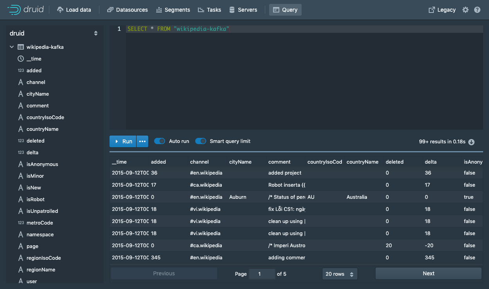

1.1. Getting started
This tutorial demonstrates how to load data into Apache Druid from a Kafka stream, using Druid's Kafka indexing service.
For this tutorial, we'll assume you've already downloaded Druid as described in
the quickstart using the micro-quickstart single-machine configuration and have it
running on your local machine. You don't need to have loaded any data yet.
1.2. Download and start Kafka
Apache Kafka is a high throughput message bus that works well with Druid. For this tutorial, we will use Kafka 2.7.0. To download Kafka, issue the following commands in your terminal:
curl -O https://archive.apache.org/dist/kafka/2.7.0/kafka_2.13-2.7.0.tgz
tar -xzf kafka_2.13-2.7.0.tgz
cd kafka_2.13-2.7.0
Start a Kafka broker by running the following command in a new terminal:
./bin/kafka-server-start.sh config/server.properties
Run this command to create a Kafka topic called wikipedia, to which we'll send data:
./bin/kafka-topics.sh --create --topic wikipedia --bootstrap-server localhost:9092
1.3. Load data into Kafka
Let's launch a producer for our topic and send some data!
In your Druid directory, run the following command:
cd quickstart/tutorial
gunzip -c wikiticker-2015-09-12-sampled.json.gz > wikiticker-2015-09-12-sampled.json
In your Kafka directory, run the following command, where {PATH_TO_DRUID} is replaced by the path to the Druid directory:
export KAFKA_OPTS="-Dfile.encoding=UTF-8"
./bin/kafka-console-producer.sh --broker-list localhost:9092 --topic wikipedia < {PATH_TO_DRUID}/quickstart/tutorial/wikiticker-2015-09-12-sampled.json
The previous command posted sample events to the wikipedia Kafka topic. Now we will use Druid's Kafka indexing service to ingest messages from our newly created topic.
1.4. Loading data with the data loader
Navigate to localhost:8888 and click Load data in the console header.

Select Apache Kafka and click Connect data.

Enter localhost:9092 as the bootstrap server and wikipedia as the topic.
Click Apply and make sure that the data you are seeing is correct.
Once the data is located, you can click "Next: Parse data" to go to the next step.
The data loader will try to automatically determine the correct parser for the data.
In this case it will successfully determine json.
Feel free to play around with different parser options to get a preview of how Druid will parse your data.
With the json parser selected, click Next: Parse time to get to the step centered around determining your primary timestamp column.

Druid's architecture requires a primary timestamp column (internally stored in a column called __time).
If you do not have a timestamp in your data, select Constant value.
In our example, the data loader will determine that the time column in our raw data is the only candidate that can be used as the primary time column.
Click Next: ... twice to go past the Transform and Filter steps.
You do not need to enter anything in these steps as applying ingestion time transforms and filters are out of scope for this tutorial.

In the Configure schema step, you can configure which dimensions and metrics will be ingested into Druid.
This is exactly what the data will appear like in Druid once it is ingested.
Since our dataset is very small, go ahead and turn off Rollup by clicking on the switch and confirming the change.
Once you are satisfied with the schema, click Next to go to the Partition step where you can fine tune how the data will be partitioned into segments.

Here, you can adjust how the data will be split up into segments in Druid. Since this is a small dataset, there are no adjustments that need to be made in this step.
Click Next: Tune to go to the tuning step.

In the Tune step is it very important to set Use earliest offset to True since we want to consume the data from the start of the stream.
There are no other changes that need to be made here, so click Next: Publish to go to the Publish step.

Let's name this datasource wikipedia-kafka.
Finally, click Next to review your spec.

This is the spec you have constructed. Feel free to go back and make changes in previous steps to see how changes will update the spec. Similarly, you can also edit the spec directly and see it reflected in the previous steps.
Once you are satisfied with the spec, click Submit and an ingestion task will be created.

You will be taken to the task view with the focus on the newly created supervisor.
The task view is set to auto refresh, wait until your supervisor launches a task.
When a tasks starts running, it will also start serving the data that it is ingesting.
Navigate to the Datasources view from the header.

When the wikipedia-kafka datasource appears here it can be queried.
Note: if the datasource does not appear after a minute you might have not set the supervisor to read from the start of the stream (in the Tune step).
At this point, you can go to the Query view to run SQL queries against the datasource.
Since this is a small dataset, you can simply run a SELECT * FROM "wikipedia-kafka" query to see your results.

Check out the query tutorial to run some example queries on the newly loaded data.
1.4.1. Submit a supervisor via the console
In the console, click Submit supervisor to open the submit supervisor dialog.

Paste in this spec and click Submit.
{
"type": "kafka",
"spec" : {
"dataSchema": {
"dataSource": "wikipedia",
"timestampSpec": {
"column": "time",
"format": "auto"
},
"dimensionsSpec": {
"dimensions": [
"channel",
"cityName",
"comment",
"countryIsoCode",
"countryName",
"isAnonymous",
"isMinor",
"isNew",
"isRobot",
"isUnpatrolled",
"metroCode",
"namespace",
"page",
"regionIsoCode",
"regionName",
"user",
{ "name": "added", "type": "long" },
{ "name": "deleted", "type": "long" },
{ "name": "delta", "type": "long" }
]
},
"metricsSpec" : [],
"granularitySpec": {
"type": "uniform",
"segmentGranularity": "DAY",
"queryGranularity": "NONE",
"rollup": false
}
},
"tuningConfig": {
"type": "kafka",
"reportParseExceptions": false
},
"ioConfig": {
"topic": "wikipedia",
"inputFormat": {
"type": "json"
},
"replicas": 2,
"taskDuration": "PT10M",
"completionTimeout": "PT20M",
"consumerProperties": {
"bootstrap.servers": "localhost:9092"
}
}
}
}
This will start the supervisor that will in turn spawn some tasks that will start listening for incoming data.
1.4.2. Submit a supervisor directly
To start the service directly, we will need to submit a supervisor spec to the Druid overlord by running the following from the Druid package root:
curl -XPOST -H'Content-Type: application/json' -d @quickstart/tutorial/wikipedia-kafka-supervisor.json http://localhost:8081/druid/indexer/v1/supervisor
If the supervisor was successfully created, you will get a response containing the ID of the supervisor; in our case we should see {"id":"wikipedia"}.
For more details about what's going on here, check out the Druid Kafka indexing service documentation.
You can view the current supervisors and tasks in the Druid Console: http://localhost:8888/unified-console.md#tasks.
1.5. Querying your data
After data is sent to the Kafka stream, it is immediately available for querying.
Please follow the query tutorial to run some example queries on the newly loaded data.
1.6. Cleanup
To go through any of the other ingestion tutorials, you will need to shut down the cluster and reset the cluster state by removing the contents of the var directory in the Druid home, as the other tutorials will write to the same "wikipedia" datasource.
You should additionally clear out any Kafka state. Do so by shutting down the Kafka broker with CTRL-C before stopping ZooKeeper and the Druid services, and then deleting the Kafka log directory at /tmp/kafka-logs:
rm -rf /tmp/kafka-logs
1.7. Further reading
For more information on loading data from Kafka streams, please see the Druid Kafka indexing service documentation.